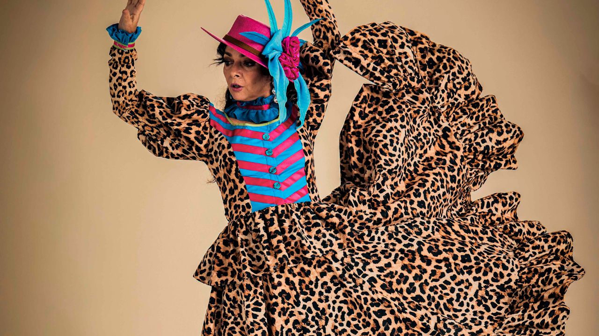

“Festa no Arraial, O Musical” transforma Shakespeare em festa junina no Teatro Sabesp Frei Caneca

Livremente inspirado em “Sonho de uma Noite de Verão”, espetáculo estreia em 24 de julho, com direção de Thereza Falcão e Claudia Ohana no elenco
O universo de William Shakespeare vai ganhar sotaque brasileiro, fogueira acesa e clima de festa junina em “Festa no Arraial, O Musical”. Livremente inspirado em “Sonho de uma Noite de Verão”, o espetáculo estreia no dia 24 de julho, no Teatro Sabesp Frei Caneca, em São Paulo, onde fica em cartaz até 16 de agosto.
Com direção de Thereza Falcão, que também assina o texto ao lado de Mariana Mesquita, a montagem transporta a comédia shakespeariana para uma vila nordestina tomada pela magia do arraial. A trama mistura romance, fantasia e humor para contar uma história de encontros, desencontros e escolhas afetivas atravessadas por tradições, interesses e forças encantadas da natureza.
No palco, o elenco reúne Claudia Ohana, Lorena Tucci, Cadu Libonati, Bernardo Mesquita, Erika Affonso, Danilo Dal Farra, Sofie Orleans, Rafa Canedo, Júlia Perré, Nestor Fonseca, Caio Padilha, Benji Iuler, Jude Fontenelle e Mariana Braga.
Na história, Hérmia e Lisandro são dois jovens apaixonados que sonham em se casar durante a grande noite do arraial. Quando um acontecimento inesperado interfere em seus planos, o destino do casal e de todos ao redor começa a mudar. Entre quadrilhas, canções e criaturas encantadas da mata, o musical propõe uma celebração da cultura popular brasileira a partir de uma matriz clássica da dramaturgia ocidental.
“Festa no Arraial é um convite para que o público volte a acreditar na força dos encontros, dos sonhos e do amor. É uma história que celebra nossas raízes, nossa cultura e tudo aquilo que faz o coração bater mais forte. Queremos que cada pessoa saia do teatro com a sensação de ter vivido uma noite mágica”, afirma Thereza Falcão.
A montagem aposta em uma linguagem voltada para toda a família, aproximando a estrutura de “Sonho de uma Noite de Verão” de elementos reconhecíveis das festas juninas brasileiras. O resultado busca criar uma fábula musical em que o amor verdadeiro não aparece como imposição, mas como descoberta.
O espetáculo tem direção musical de Marcelo Alonso Neves, pesquisa musical de Rodrigo Faour, cenários e figurinos de Mauro Leite, coreografias de Renato Vieira e iluminação de Adriana Ortiz. A idealização e produção geral são de Sérgio Lopes.
“Festa no Arraial, O Musical” é apresentado pelo Ministério da Cultura e pela Brasilprev, com patrocínio do Laboratório Cristália, produção e marketing da Inova Brand e realização da Everybody Entretenimento, Ministério da Cultura e Governo do Brasil.
A produção integra um movimento recente de criação de musicais brasileiros originais, voltados a diferentes públicos e interessados em dialogar com referências populares, repertórios nacionais e narrativas familiares. Ao levar Shakespeare para o arraial, a montagem propõe menos uma tradução literal do clássico e mais uma reinvenção brasileira de seus temas: desejo, sonho, encantamento e os caminhos inesperados do amor.
Serviço
Festa no Arraial, O Musical
Texto: Thereza Falcão e Mariana Mesquita
Direção: Thereza Falcão
Direção musical: Marcelo Alonso Neves
Pesquisa musical: Rodrigo Faour
Coreografias: Renato Vieira
Idealização e produção geral: Sérgio Lopes
Produção e marketing: Inova Brand
Realização: Everybody Entretenimento
Elenco: Claudia Ohana, Lorena Tucci, Cadu Libonati, Bernardo Mesquita, Erika Affonso, Danilo Dal Farra, Sofie Orleans, Rafa Canedo, Júlia Perré, Nestor Fonseca, Caio Padilha, Benji Iuler, Jude Fontenelle e Mariana Braga
Temporada: de 24 de julho a 16 de agosto de 2026
Local: Teatro Sabesp Frei Caneca — Shopping Frei Caneca
Endereço: Rua Frei Caneca, 569 — Consolação, São Paulo — SP
Sessões:24 de julho, sexta-feira, às 20h25 de julho, sábado, às 20h26 de julho, domingo, às 19h
31 de julho, sexta-feira, às 20h1º de agosto, sábado, às 17h2 de agosto, domingo, às 18h
7 de agosto, sexta-feira, às 20h8 de agosto, sábado, às 17h e 20h9 de agosto, domingo, às 18h
14 de agosto, sexta-feira, às 20h15 de agosto, sábado, às 17h e 20h16 de agosto, domingo, às 18h
Ingressos:Plateia I: R$ 150 inteira | R$ 75 meia-entradaPlateia II: R$ 120 inteira | R$ 60 meia-entradaPlateia Superior: R$ 80 inteira | R$ 40 meia-entrada
Ingresso solidário: 50% de desconto mediante doação de 1 kg de alimento não perecível
Vendas: Uhuu e bilheteria do Teatro Sabesp Frei Caneca
Duração: 90 minutos
Classificação indicativa: livre
Rede social: @festanoarraial